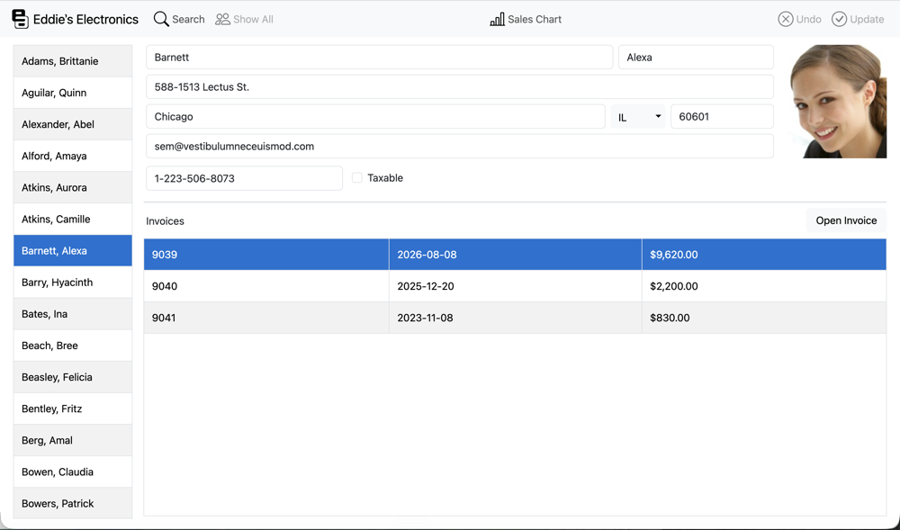
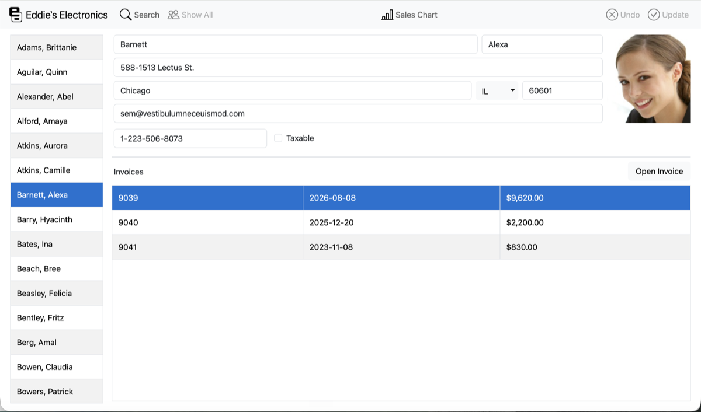

Documented entities
Move from application lifecycle to concrete controls without losing context.
Xojo API


Project facts and API structure are placed where they help orientation, not buried in decoration.
Move from application lifecycle to concrete controls without losing context.
Windows, pages, dialogs, containers, menus, and toolbars.
Methods, properties, events, and full source bodies remain searchable.
Open a project layer, then inspect any generated entity.
Architecture in source
Continue with the real API surface.
Class
SQLite database